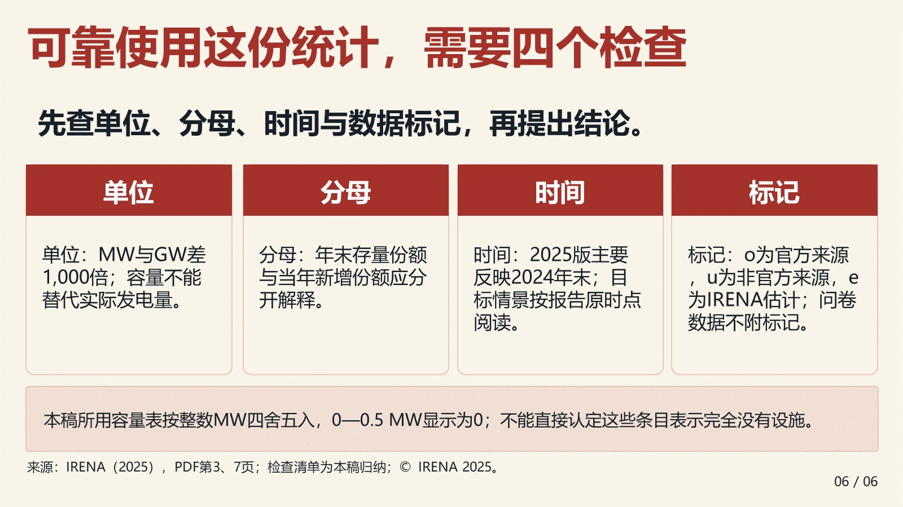
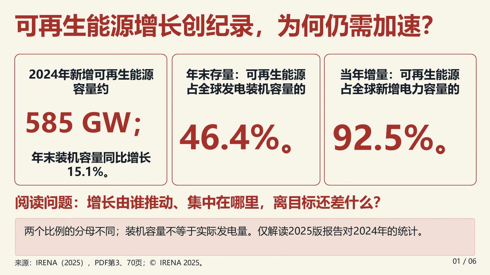
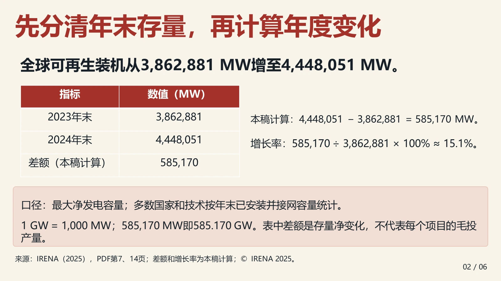
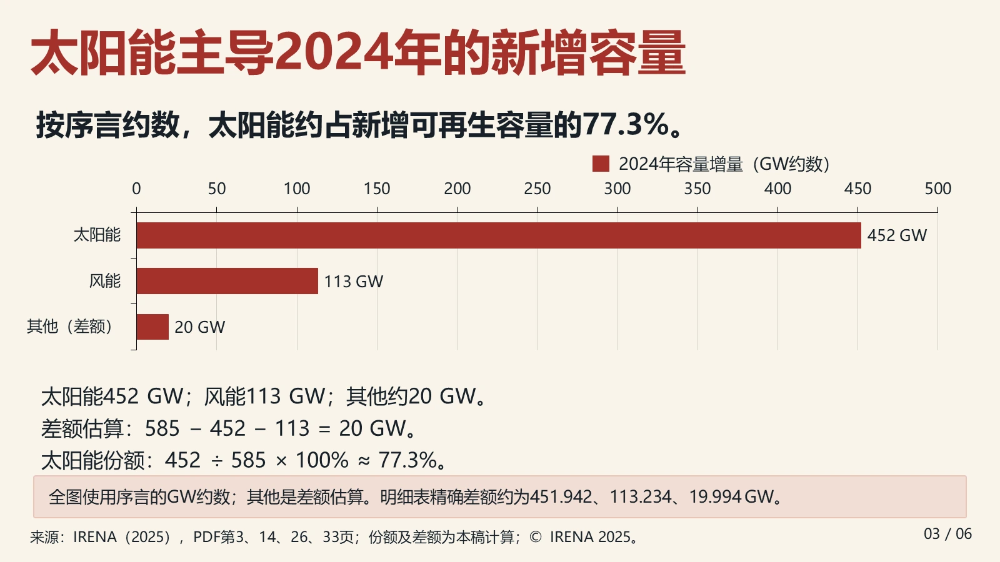
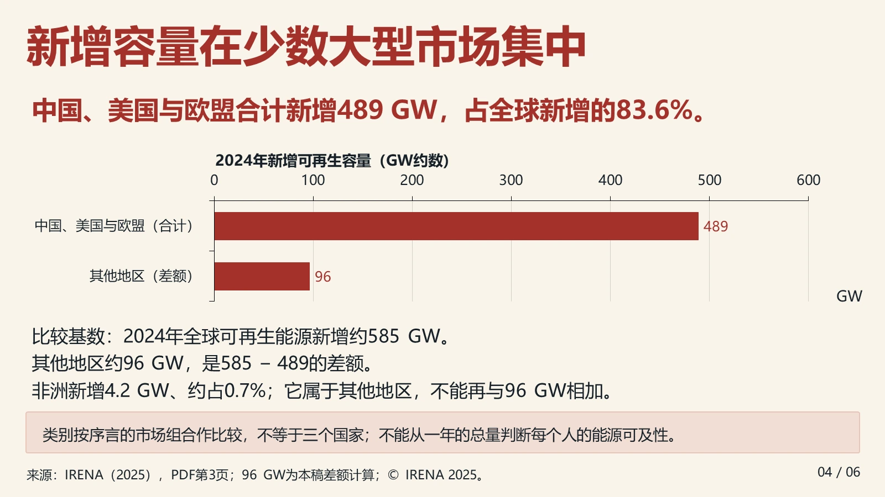
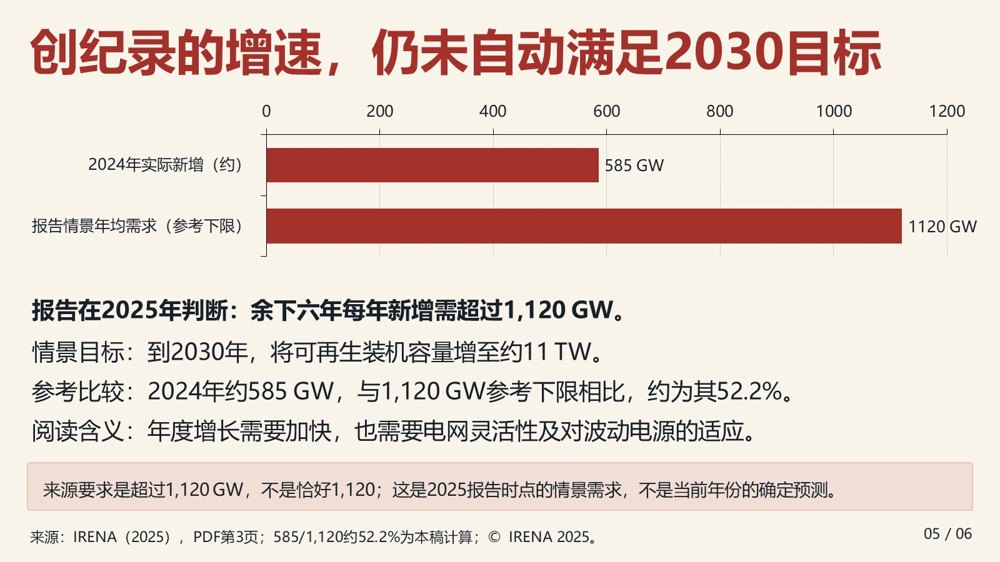

SLIDEMUSE / EDITABLE SAMPLE
打开成品，亲手改一次
IRENA 六页统计导读。文字、表格和三张图表都是原生对象。下载成品试用，或从源材料和结构化输入复现。
数据来自2025版报告对2024年的统计。修改练习另存，练习页显著标明合成数据。源报告保留 © IRENA 2025。
四种真实修改



第6页“时间”说明的“解读”改为“阅读”，并同步备注。原生文字框直接修改。
下载本次修改版 PPTX看修改前后的实际结果
视频使用真实 PPTX 的 PowerPoint 导出帧，展示原生对象修改结果。四个练习分别从原版开始。
完整六页可编辑成品










解压后即可复现
完整 ZIP 包含固定运行时。安装 Python 依赖后，一条命令构建六套 PPTX，核对对象、嵌入工作簿和备注。
python -m pip install -r runtime/requirements.txt
python reproduce.py --verify加上 --render --backend powerpoint 可在 Windows PowerPoint 环境导出36页预览。需要 Python 3.10+，原版字体为微软雅黑。